import pandas as pd
import seaborn as sns
import matplotlib.pyplot as pltVisualizations for Multiple Variables
IN2039: Data Visualization for Decision Making
Agenda
- Data with more than one variable
- Two numerical variables
- One numerical and one categorical variable
- Two categorical variables
- Three or more variables
Load the libraries
We will use pandas to work with data, seaborn to create graphs, and matplotlib to customize them.
Let’s import these libraries in Google Colab before starting.
Multivariate data
Multivariate data consists of datasets that contain observations of two or more variables.
- Variables can be numerical or categorical.
- Variables may or may not be associated with each other.
. . .
The goal is to determine whether the variables are related and to explore the type of relationship.
Example 1
Consider data from 392 cars, including miles per gallon, number of cylinders, horsepower, weight, acceleration, model year, and origin.
The data are available in the file “auto_dataset.xlsx”.
auto_data = pd.read_excel("auto_dataset.xlsx")
auto_data.head()| mpg | cylinders | displacement | horsepower | weight | acceleration | year | origin | car name | |
|---|---|---|---|---|---|---|---|---|---|
| 0 | 18.0 | 8 | 307.0 | 130 | 3504 | 12.0 | 70 | American | chevrolet chevelle malibu |
| 1 | 15.0 | 8 | 350.0 | 165 | 3693 | 11.5 | 70 | American | buick skylark 320 |
| 2 | 18.0 | 8 | 318.0 | 150 | 3436 | 11.0 | 70 | American | plymouth satellite |
| 3 | 16.0 | 8 | 304.0 | 150 | 3433 | 12.0 | 70 | American | amc rebel sst |
| 4 | 17.0 | 8 | 302.0 | 140 | 3449 | 10.5 | 70 | American | ford torino |
Principle 1: Define the question
When working with multiple variables, typical questions include:
- How are variables \(X\) and \(Y\) related?
- Is the distribution of \(X\) the same across the subgroups defined by \(Z\)?
- Are there any unusual observations when considering \(X\) and \(Y\) together?
- Are there any unusual values of \(X\) within a subgroup defined by \(Z\)?
Principle 2: Turn data into information
Several types of graphs help us explore relationships between two or more variables.
| Variable types | Common graphs |
|---|---|
| Two numerical variables | Scatter plot, line graph |
| Two categorical variables | Side-by-side bar chart, stacked bar chart |
| Numerical and categorical variables | Side-by-side boxplots, dot plot, bar chart |
The types of variables determine which visualizations are appropriate.
Two Numerical Variables
Independent and dependent variables
When investigating a relationship between two variables, we often use specific terminology.
. . .
The dependent or response variable is denoted by \(Y\).
. . .
The independent or predictor variable is denoted by \(X\).
. . .
Our goal is to explore whether changes in \(X\) are associated with changes in \(Y\), and the nature of this association.
An association does not, by itself, imply causation.
Scatter plot
The most common graph for examining the relationship between two numerical variables is a scatter plot.
. . .
The variables \(X\) and \(Y\) are placed on the horizontal and vertical axes, respectively. Each point represents a pair of values \((X,Y)\).
. . .
The goal is to explore linear or nonlinear relationships between the variables.
Scatter plot in Python
To create a scatter plot with seaborn, we use sns.scatterplot().
For example, let’s explore the relationship between a car’s weight (weight) and its fuel efficiency (mpg).
plt.figure(figsize=(9, 5))
sns.scatterplot(data=auto_data, x="weight", y="mpg")
plt.show()plt.figure(figsize=(9, 5))
sns.scatterplot(data=auto_data, x="weight", y="mpg")
plt.show()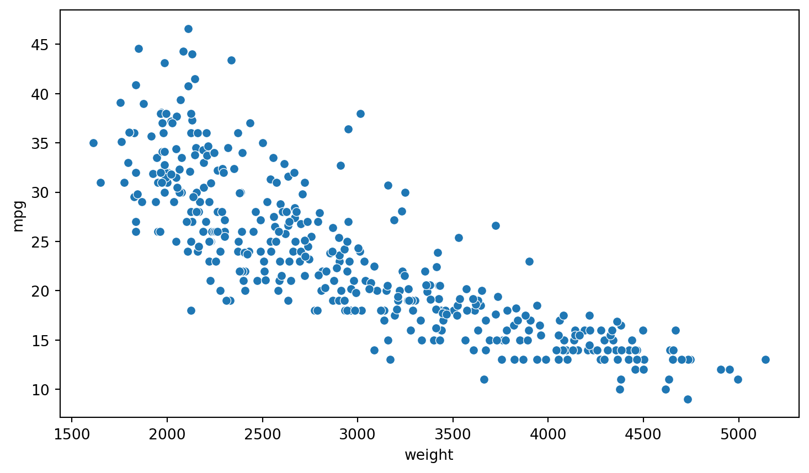
Principle 3: Apply graphic design principles
We can modify the default appearance of the graph to improve its readability.
For example, color, marker, and s control the color, shape, and size of the points, respectively.
sns.scatterplot(data=data_set, x="X", y="Y", color=..., marker=..., s=...)
plt.figure(figsize=(9, 5))
sns.scatterplot(data=auto_data, x="weight", y="mpg",
color="blue", marker="x", s=100)
plt.show()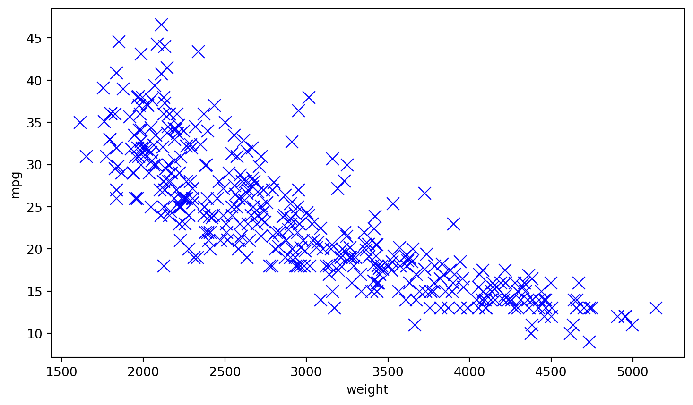
Possible point shapes
To change the symbol used for the points, set marker to a symbol such as "o", "x", "s", or "^".
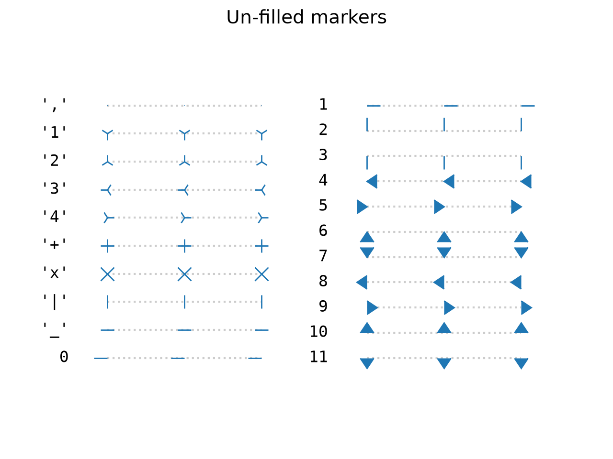
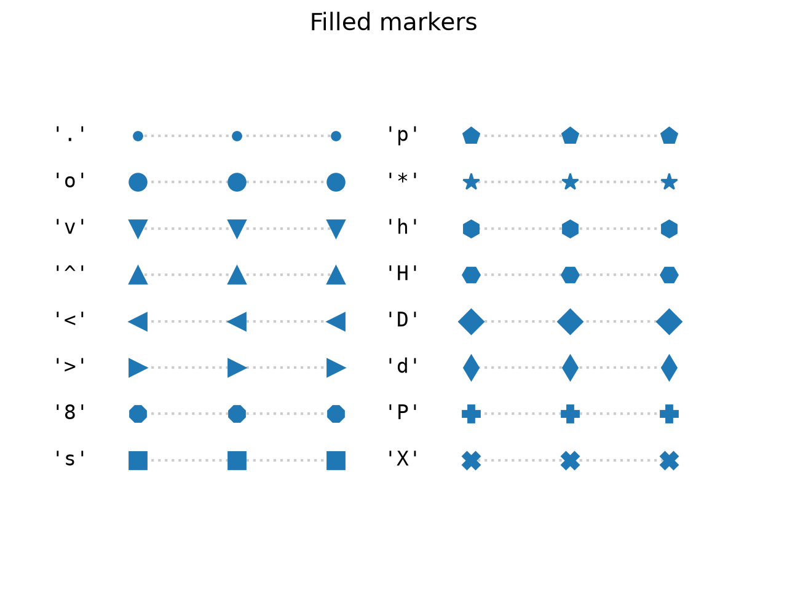
Improving the scatter plot
We can also add a title and axis labels.
Code
plt.figure(figsize=(9, 5))
sns.scatterplot(data=auto_data, x="weight", y="mpg",
color="darkblue", s=50)
plt.title("Car weight and fuel efficiency")
plt.xlabel("Weight (lb)")
plt.ylabel("Miles per gallon")
plt.grid()
plt.show()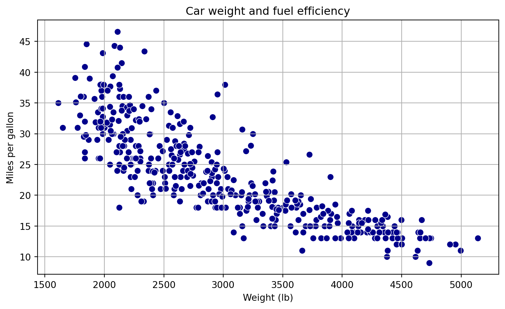
Include zero
In the previous graph, the vertical axis starts above zero. If we want the vertical axis to start at zero, we can use plt.ylim().
plt.figure(figsize=(5.5, 2.5))
sns.scatterplot(data=auto_data, x="weight", y="mpg",
color="darkblue", s=50)
plt.xlabel("Weight (lb)")
plt.ylabel("Miles per gallon")
plt.ylim(0, 50)
plt.grid()
plt.show()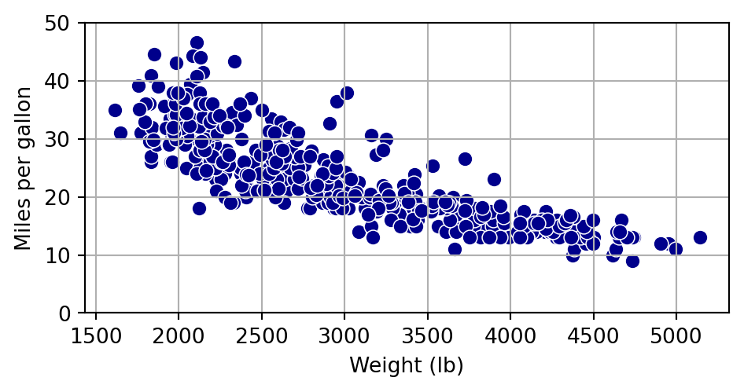
If necessary, we can also make the horizontal axis start at zero by using plt.xlim().
plt.figure(figsize=(6, 3))
sns.scatterplot(data=auto_data, x="weight", y="mpg",
color="darkblue", s=50)
plt.xlabel("Weight (lb)")
plt.ylabel("Miles per gallon")
plt.xlim(0, 5500)
plt.ylim(0, 50)
plt.grid()
plt.show()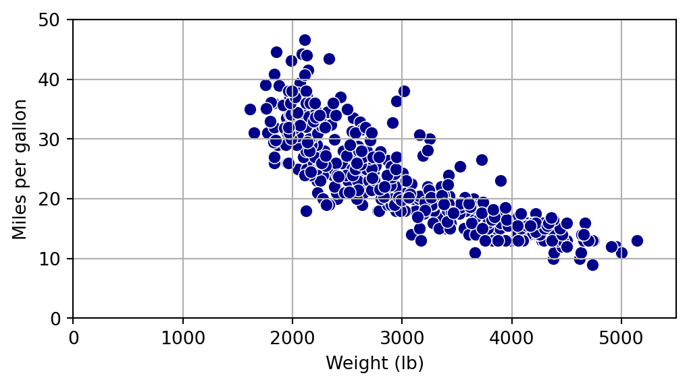
Unlike bar charts, scatter plots do not always need axes to start at zero. Choose limits that support accurate interpretation.
Individual graphs
Graphs of individual variables (like histograms) do not allow us to examine the relationship between two variables. They only provide information about the distribution of each variable.
Code
plt.figure(figsize=(4, 3))
sns.histplot(data=auto_data, x="mpg", color="darkblue")
plt.title("Distribution of fuel efficiency")
plt.xlabel("Miles per gallon")
plt.ylabel("Frequency")
plt.show()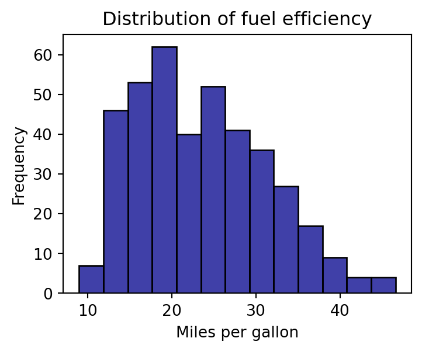
Code
plt.figure(figsize=(4, 3))
sns.histplot(data=auto_data, x="weight", color="darkblue")
plt.title("Distribution of car weight")
plt.xlabel("Weight (lb)")
plt.ylabel("Frequency")
plt.show()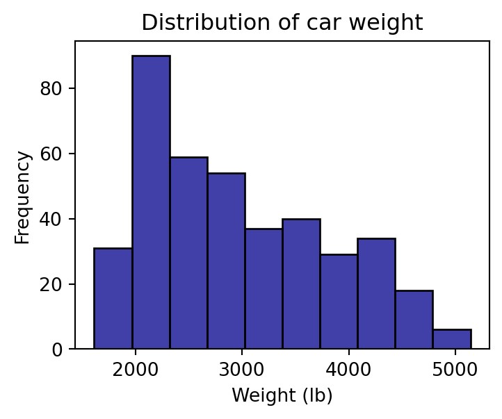
Line graph
A line graph connects data points with lines.
- \(X\) (horizontal): usually time or another ordered variable.
- \(Y\) (vertical): the numerical variable being measured.
Each point represents a value at a particular point in time or along the horizontal axis.
. . .
The goal is to explore trends over time or changes in a continuous variable.
Example 2
Consider the data in “spotify.xlsx”, which contains global daily streams of five popular songs on Spotify in 2017.
spotify_data = pd.read_excel("spotify.xlsx")
spotify_data["Date"] = pd.to_datetime(spotify_data["Date"])
spotify_data.head(3)| Date | Day | Shape of You | Despacito | Something Just Like This | HUMBLE. | Unforgettable | |
|---|---|---|---|---|---|---|---|
| 0 | 2017-01-06 | 1 | 12287078 | NaN | NaN | NaN | NaN |
| 1 | 2017-01-07 | 2 | 13190270 | NaN | NaN | NaN | NaN |
| 2 | 2017-01-08 | 3 | 13099919 | NaN | NaN | NaN | NaN |
Line graph in Python
Let’s focus on Despacito by Luis Fonsi. To create a line graph with seaborn, we use sns.lineplot().
plt.figure(figsize=(7, 4))
sns.lineplot(data=spotify_data, x="Date", y="Despacito")
plt.show()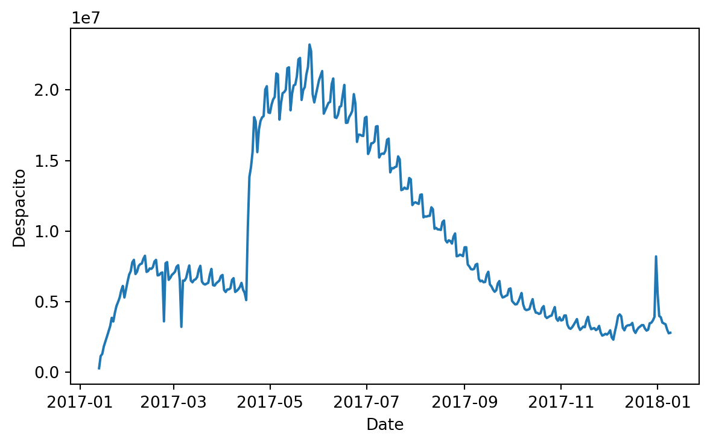
Applying Principle 3
We can customize the line using linestyle, linewidth, and color.
sns.lineplot(data=data_set, x="X", y="Y", linestyle=..., linewidth=..., color=...)
To change the appearance of the line, use a value of linestyle such as "-", "--", ":", or "-.".
Code
plt.figure(figsize=(9, 6))
sns.lineplot(data=spotify_data, x="Date", y="Despacito",
color="darkblue", linewidth=2)
plt.title("Popularity of Despacito by Luis Fonsi")
plt.xlabel("Date")
plt.ylabel("Daily Spotify streams")
plt.xticks(rotation=45)
plt.tight_layout()
plt.grid()
plt.show()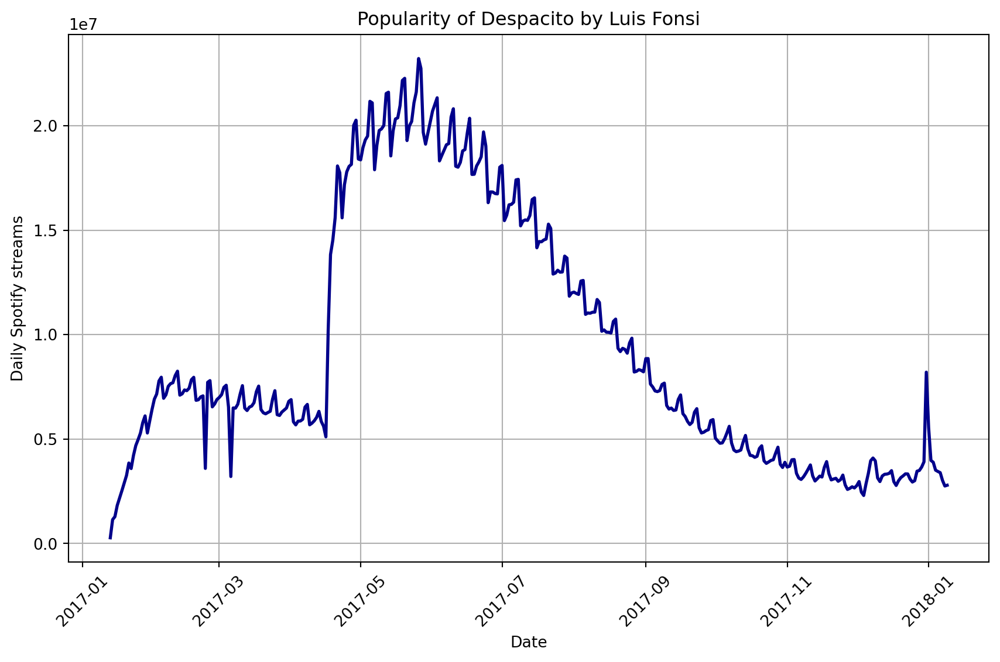
One Categorical and One Numerical Variable
Divide the data into groups!
To examine the relationship between a numerical and a categorical variable, we use the categorical variable to divide observations into groups. Then, we compare the distribution of the numerical variable across groups.
. . .
In this context:
- \(X\) is the categorical variable.
- \(Y\) is the numerical variable.
. . .
Side-by-side boxplots are especially useful for comparing distributions across groups.
Boxplots by groups
Side-by-side boxplots compare the distribution of a numerical variable across different groups.
We create them using seaborn:
sns.boxplot(data=data_set, x="X", y="Y")
For example, let’s compare the distributions of fuel efficiency for cars built in America, Europe, and Japan.
plt.figure(figsize=(9, 5))
sns.boxplot(data=auto_data, x="origin", y="mpg")
plt.show()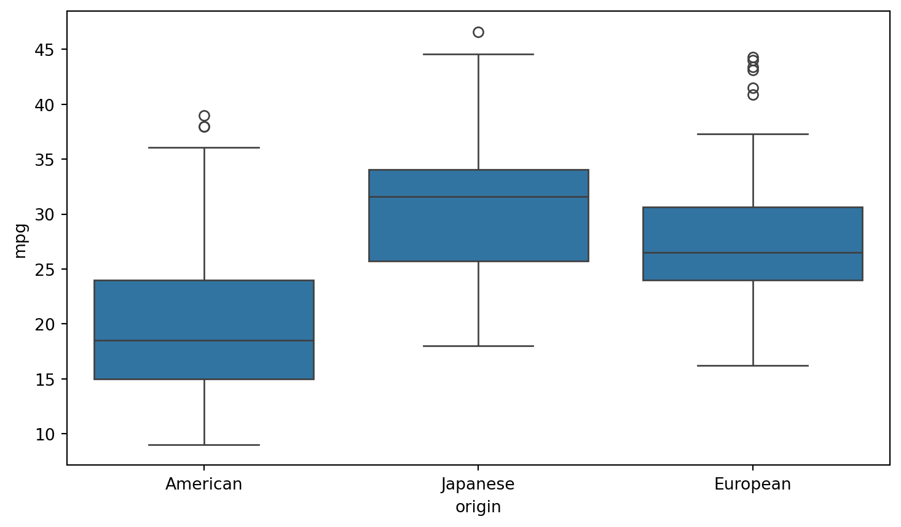
Applying Principle 3
Code
plt.figure(figsize=(9, 6))
sns.boxplot(data=auto_data, x="origin", y="mpg",
color="lightblue")
plt.xlabel("Origin")
plt.ylabel("Miles per gallon")
plt.grid()
plt.show()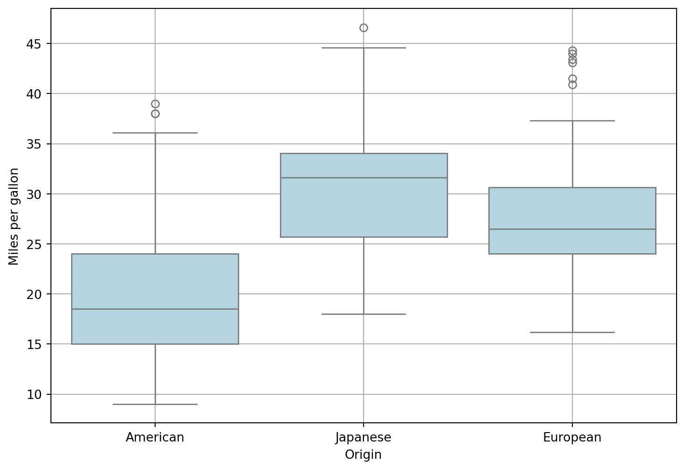
We can customize the appearance of outliers using the flierprops argument.
Code
plt.figure(figsize=(7, 5))
sns.boxplot(data=auto_data, x="origin", y="mpg",
color="lightblue",
flierprops={"marker": "x", "markeredgecolor": "red",
"markersize": 8})
plt.xlabel("Origin")
plt.ylabel("Miles per gallon")
plt.grid()
plt.show()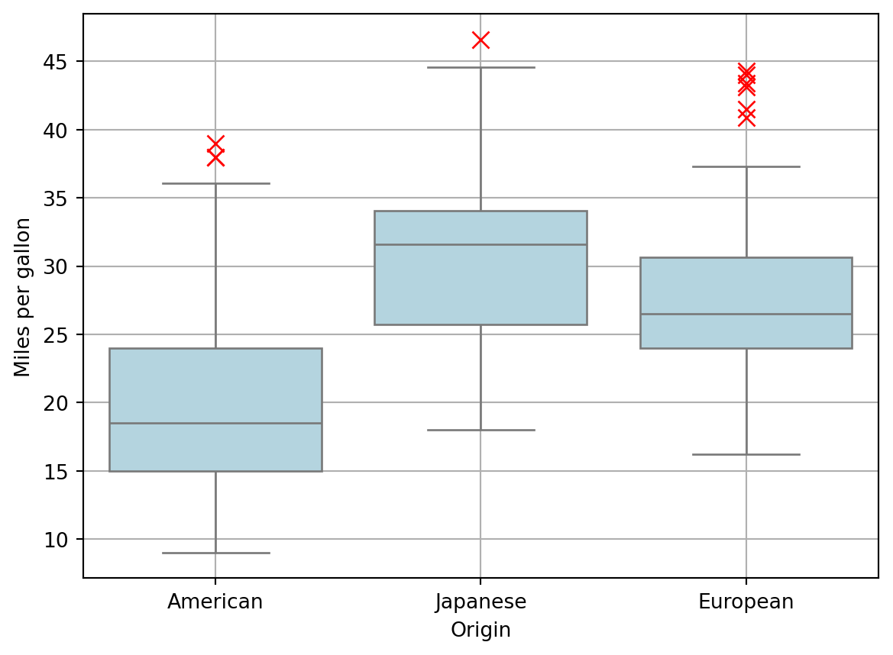
Plotting statistical summaries by group
Alternatively, we can summarize the numerical variable \(Y\) for each category of \(X\) using a statistic such as the mean or median.
For example, let’s calculate average fuel efficiency by car origin using groupby() and mean() from pandas.
mean_mpg = auto_data.groupby("origin", as_index=False)["mpg"].mean()
mean_mpg = mean_mpg.rename(columns={"mpg": "mean_mpg"})The summary data are:
mean_mpg| origin | mean_mpg | |
|---|---|---|
| 0 | American | 20.083534 |
| 1 | European | 27.891429 |
| 2 | Japanese | 30.450633 |
Two common ways to visualize one summary value per category are:
- Cleveland dot plot
- Bar chart
Cleveland dot plot
A Cleveland dot plot shows numerical values for different categories using points. It is an alternative to a bar chart.
plt.figure(figsize=(7, 4))
sns.scatterplot(data=mean_mpg, x="mean_mpg", y="origin")
plt.show()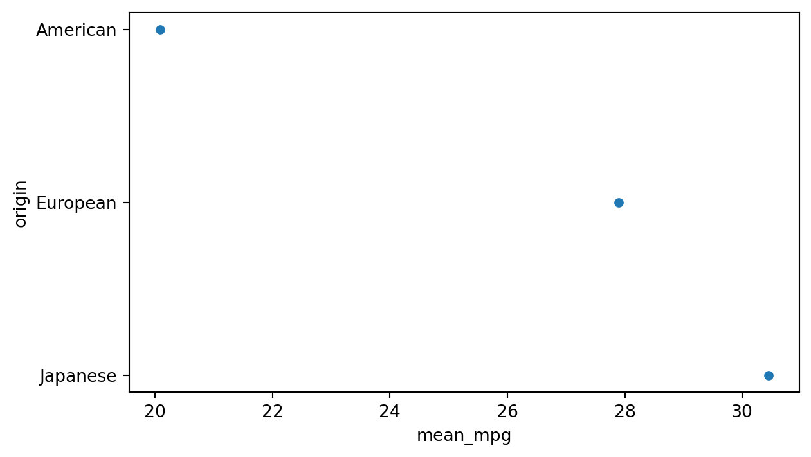
Improving the plot
Apply Principle 3 to improve the appearance of the plot.
Code
plt.figure(figsize=(8, 5))
sns.scatterplot(data=mean_mpg, x="mean_mpg", y="origin",
color="deeppink", s=120)
plt.title("Average fuel efficiency by car origin")
plt.xlabel("Average miles per gallon")
plt.ylabel("Origin")
plt.xlim(0, 35)
plt.grid(axis="x")
plt.show()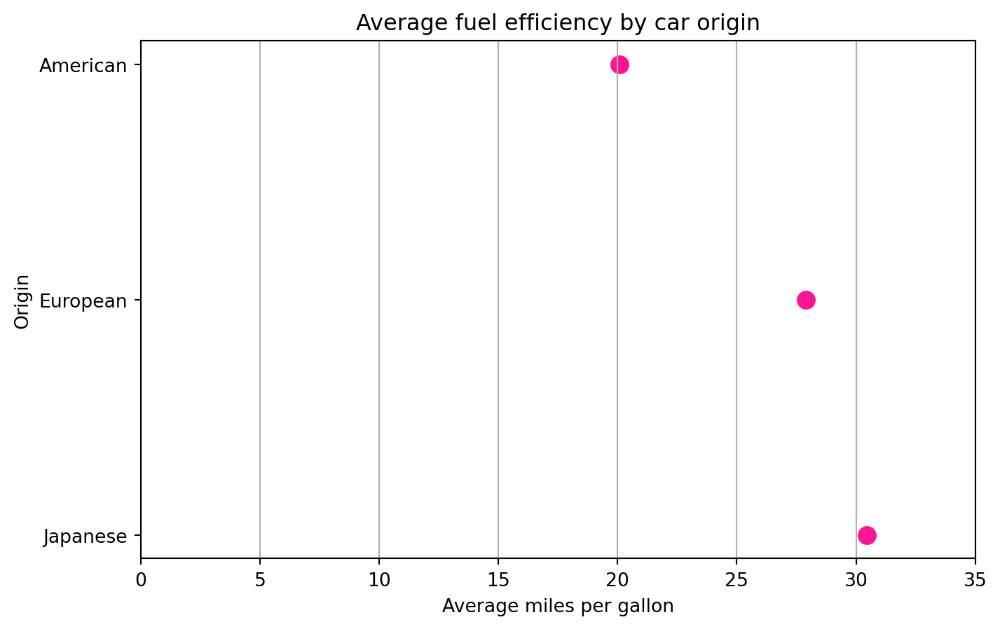
Bar chart
To create a bar chart whose bar lengths represent specified numerical values, we use sns.barplot().
plt.figure(figsize=(6, 4))
sns.barplot(data=mean_mpg, x="mean_mpg", y="origin",
color="steelblue")
plt.show()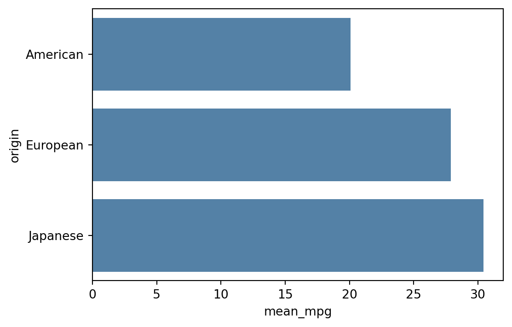
We can use similar commands to improve the appearance of the bar chart.
Code
plt.figure(figsize=(8, 5))
sns.barplot(data=mean_mpg, x="mean_mpg", y="origin",
color="lightblue")
plt.title("Average fuel efficiency by car origin")
plt.xlabel("Average miles per gallon")
plt.ylabel("Origin")
plt.xlim(0, 35)
plt.grid(axis="x")
plt.show()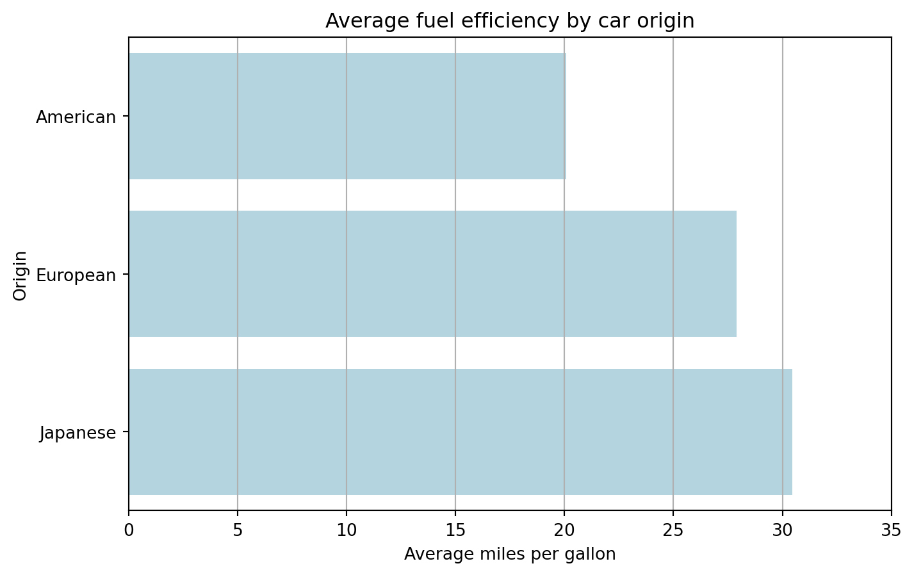
Two Categorical Variables
Divide the data into groups!
With two categorical variables, we compare the distribution of one variable across subgroups defined by the other variable.
In other words, we examine the distribution of one variable while grouping observations by another.
. . .
Two common visualizations are:
- Stacked bar charts
- Side-by-side bar charts
Example 3
Consider the data in “penguins.xlsx”.
penguins_data = pd.read_excel("penguins.xlsx")
penguins_data.head()| species | island | bill_length_mm | bill_depth_mm | flipper_length_mm | body_mass_g | sex | year | |
|---|---|---|---|---|---|---|---|---|
| 0 | Adelie | Torgersen | 39.1 | 18.7 | 181.0 | 3750.0 | male | 2007 |
| 1 | Adelie | Torgersen | 39.5 | 17.4 | 186.0 | 3800.0 | female | 2007 |
| 2 | Adelie | Torgersen | 40.3 | 18.0 | 195.0 | 3250.0 | female | 2007 |
| 3 | Adelie | Torgersen | NaN | NaN | NaN | NaN | NaN | 2007 |
| 4 | Adelie | Torgersen | 36.7 | 19.3 | 193.0 | 3450.0 | female | 2007 |
The dataset contains two categorical variables:
- Penguin species (
species). - Island where the penguin was observed (
island).
We can store categorical variables using the pandas category type.
penguins_data[["species", "island", "sex"]] = (
penguins_data[["species", "island", "sex"]].astype("category")
)Stacked bar chart
A stacked bar chart represents counts for each category, with bars divided into segments according to a second categorical variable.
In seaborn, we can create this chart using sns.histplot() and multiple="stack".
. . .
For example, let’s examine the number of penguins of each species across the three islands.
plt.figure(figsize=(7, 4))
sns.histplot(data=penguins_data, x="species", hue="island",
multiple="stack", discrete=True)
plt.show()The chart shows the frequency of each penguin species, with each bar divided by island.
plt.figure(figsize=(7, 4))
sns.histplot(data=penguins_data, x="species", hue="island",
multiple="stack", discrete=True)
plt.xlabel("Species")
plt.ylabel("Frequency")
plt.show()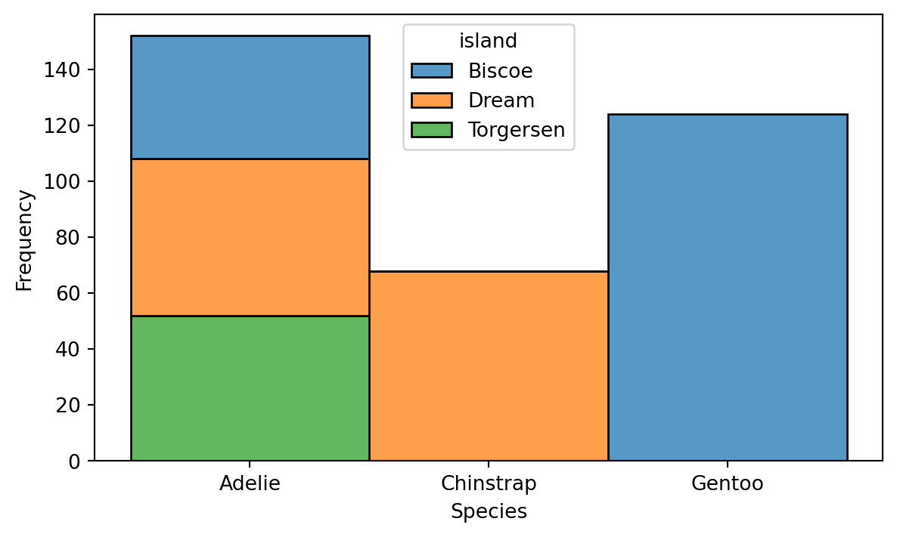
Side-by-side bar chart
An alternative is to place the bars side by side within each category of the horizontal axis.
We can use sns.countplot() with hue to create these grouped bars.
sns.countplot(data=penguins_data, x="species", hue="island")
plt.show()plt.figure(figsize=(7, 5))
sns.countplot(data=penguins_data, x="species", hue="island")
plt.xlabel("Species")
plt.ylabel("Frequency")
plt.show()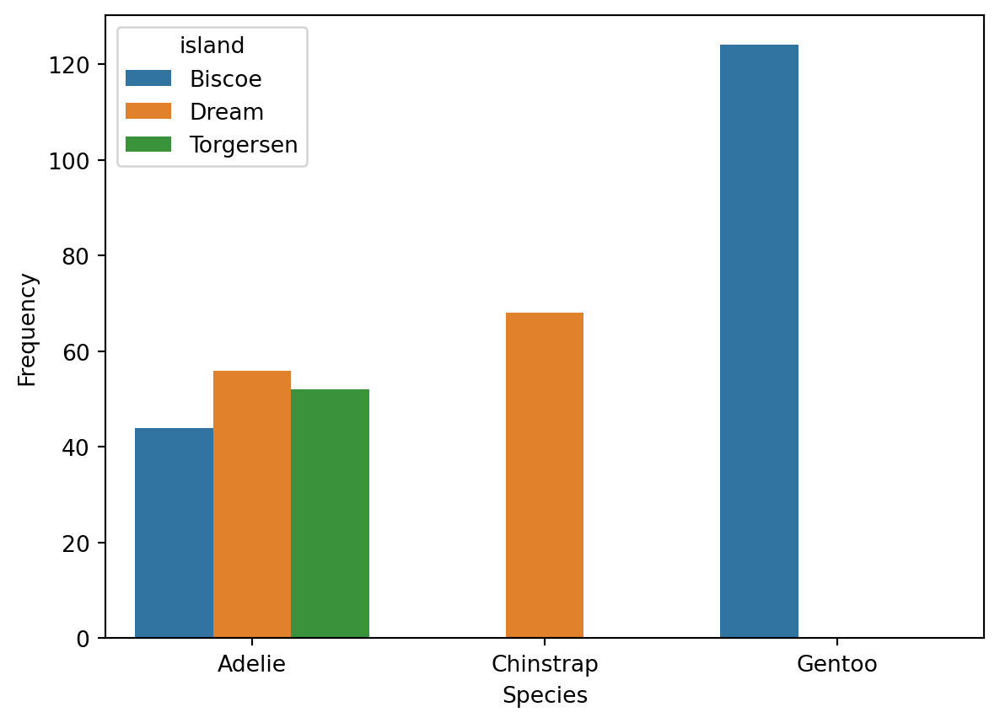
Stacked or side-by-side?
The main difference is that side-by-side bar charts show each subgroup in a separate bar, whereas stacked bar charts combine subgroups into one bar for each category.
Advantages of stacked bars:
- They show how each total is divided into segments.
- They make it easy to see overall totals.
Advantages of side-by-side bars:
- They make it easier to compare the heights of individual bars.
- They are useful for comparing subgroups across categories.
Statistical summaries
For categorical variables, common statistical summaries are frequency and relative frequency.
With pandas, groupby() and size() count observations in each combination of categories.
count_data = (penguins_data
.groupby(["island", "species"], observed=True)
.size()
.reset_index(name="count"))
count_datacount_data = (penguins_data
.groupby(["island", "species"], observed=True)
.size()
.reset_index(name="count"))
count_data| island | species | count | |
|---|---|---|---|
| 0 | Biscoe | Adelie | 44 |
| 1 | Biscoe | Gentoo | 124 |
| 2 | Dream | Adelie | 56 |
| 3 | Dream | Chinstrap | 68 |
| 4 | Torgersen | Adelie | 52 |
To calculate relative frequencies within each island, divide each count by the total number of penguins observed on that island.
count_data["proportion"] = (
count_data["count"] /
count_data.groupby("island", observed=True)["count"].transform("sum")
)
count_dataFor each island, the proportions across species add up to 1. Dividing by the grand total instead would answer a different question.
count_data["proportion"] = (
count_data["count"] /
count_data.groupby("island", observed=True)["count"].transform("sum")
)
count_data| island | species | count | proportion | |
|---|---|---|---|---|
| 0 | Biscoe | Adelie | 44 | 0.261905 |
| 1 | Biscoe | Gentoo | 124 | 0.738095 |
| 2 | Dream | Adelie | 56 | 0.451613 |
| 3 | Dream | Chinstrap | 68 | 0.548387 |
| 4 | Torgersen | Adelie | 52 | 1.000000 |
Three or More Variables
Graphs for three variables
- When examining a distribution or relationship, we may want to compare it across subgroups.
- Conditioning on an additional variable leads to graphs involving three or more variables.
- Let’s explore some common ways to visualize multiple variables.
Scatter plot with color
To visualize two numerical variables and one categorical variable, we can represent the categorical variable through color using hue.
plt.figure(figsize=(5, 3))
sns.scatterplot(data=auto_data, x="weight", y="mpg", hue="origin")
plt.xlabel("Weight (lb)")
plt.ylabel("Miles per gallon")
plt.show()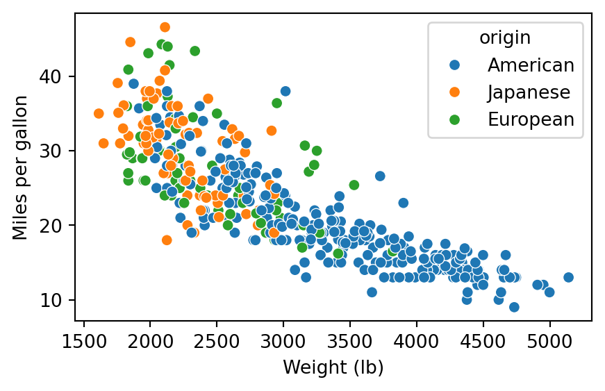
Faceted or lattice plot
A faceted plot visualizes the relationship or distribution of one or two variables for each subgroup defined by a third variable \(Z\).
. . .
Idea: Create a separate plot for each category of \(Z\).
. . .
We can use the relplot() function from seaborn with row or col.
plt.figure(figsize=(5, 3))
sns.relplot(data=auto_data, x="weight", y="mpg",
row="origin", kind="scatter")
plt.show()The function creates a grid with one column and three rows. Each row corresponds to one category of origin.
plt.figure(figsize=(5, 3))
sns.relplot(data=auto_data,
x="weight", y="mpg",
row="origin", kind="scatter",
height=2.3, aspect=1.8)
plt.show()<Figure size 480x288 with 0 Axes>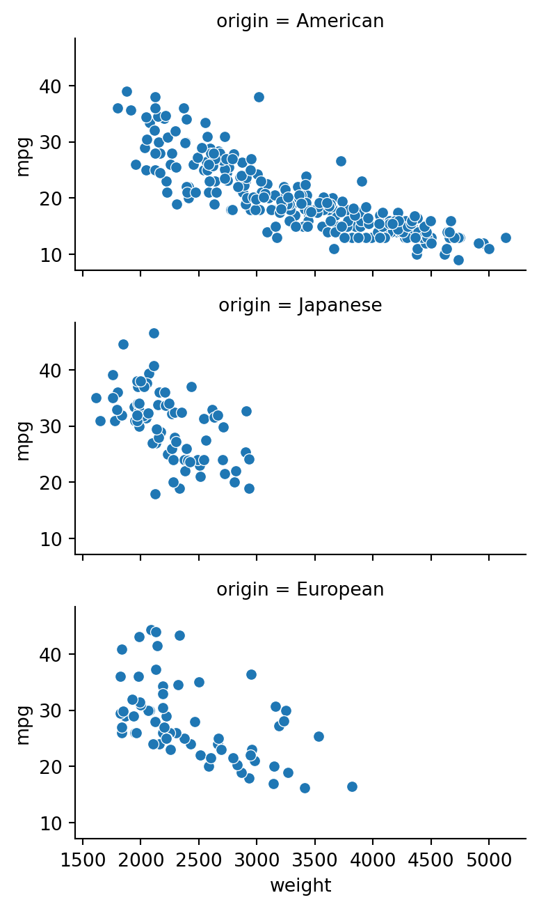
If we use col="origin" instead of row="origin", we get three columns and one row.
plt.figure(figsize=(7, 5))
sns.relplot(data=auto_data, x="weight", y="mpg",
col="origin", kind="scatter", height=3, aspect=1.1)
plt.show()<Figure size 672x480 with 0 Axes>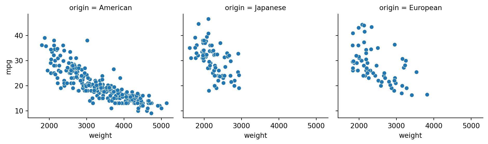
Multiple line graphs
We can use sns.lineplot() and seaborn’s faceting options to visualize how the daily streams of the five songs in “spotify.xlsx” change over time.
However, we first need to reshape the data into a format that is suitable for these graphs.
The required format
We need to combine the columns Shape of You, Despacito, Something Just Like This, HUMBLE., and Unforgettable into two columns:
- One column will contain the song title.
- The other column will contain the number of streams.
The date will remain in the Date column.
A useful pandas function
The melt() function in pandas transforms data from wide format into long format.
Long-format data are particularly useful for seaborn plots with grouping (hue) and faceting (col).
pd.melt(data, id_vars=..., var_name=..., value_name=...)
Reshape the Spotify data
song_columns = ["Shape of You", "Despacito",
"Something Just Like This", "HUMBLE.", "Unforgettable"]
data_lines = spotify_data.melt(
id_vars="Date",
value_vars=song_columns,
var_name="Song",
value_name="Streams"
)
data_lines.head()| Date | Song | Streams | |
|---|---|---|---|
| 0 | 2017-01-06 | Shape of You | 12287078.0 |
| 1 | 2017-01-07 | Shape of You | 13190270.0 |
| 2 | 2017-01-08 | Shape of You | 13099919.0 |
| 3 | 2017-01-09 | Shape of You | 14506351.0 |
| 4 | 2017-01-10 | Shape of You | 14275628.0 |
Faceted line graphs
Now we can create a line graph for each song.
plt.figure(figsize=(5, 2))
sns.relplot(data=data_lines, x="Date", y="Streams",
col="Song", col_wrap=3, kind="line",
height=3, aspect=1.1)
plt.show()<Figure size 480x192 with 0 Axes>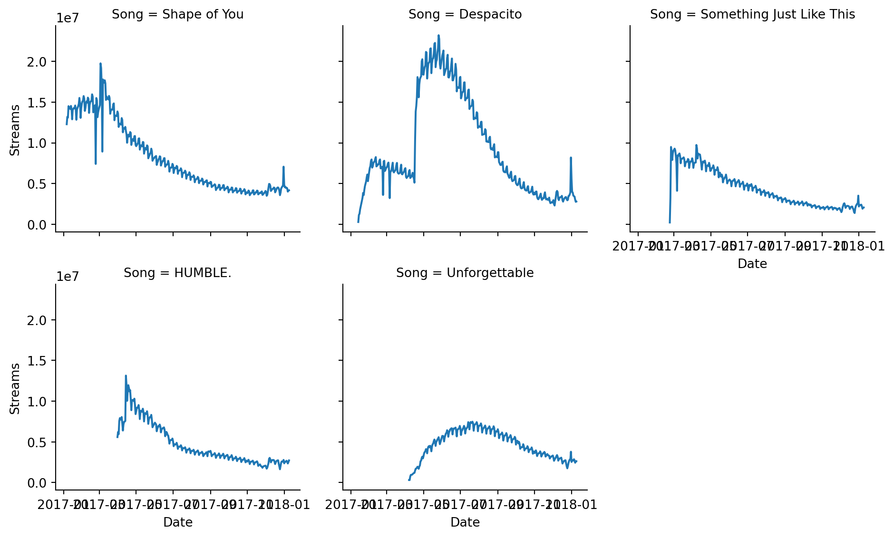
Multiple lines in one graph
Alternatively, we can draw all five lines in a single graph using hue="Song".
plt.figure(figsize=(9, 5))
sns.lineplot(data=data_lines, x="Date", y="Streams", hue="Song")
plt.title("Daily Spotify streams by song")
plt.xlabel("Date")
plt.ylabel("Daily streams")
plt.xticks(rotation=45)
plt.tight_layout()
plt.grid()
plt.show()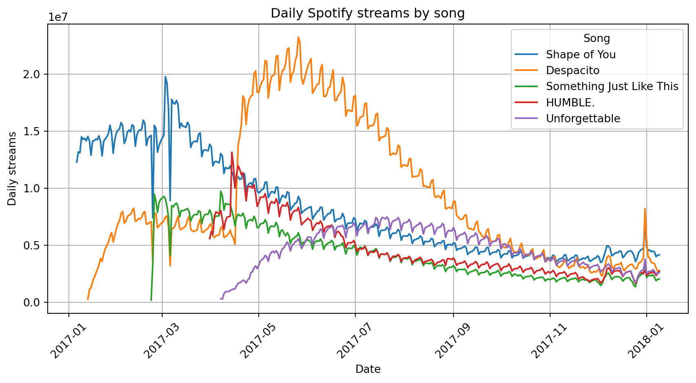
Graphs for four variables
A scatter plot can display four variables by mapping two numerical variables to the axes and using color and point size to represent two additional variables.
Here, both additional variables are categorical (species and island).
plt.figure(figsize=(7, 4))
sns.scatterplot(data=penguins_data,
x="bill_depth_mm", y="bill_length_mm",
hue="species", size="island")
plt.show()plt.figure(figsize=(7, 4))
sns.scatterplot(data=penguins_data,
x="bill_depth_mm", y="bill_length_mm",
hue="species", size="island", sizes=(40, 170))
plt.title("Penguin bill dimensions by species and island")
plt.xlabel("Bill depth (mm)")
plt.ylabel("Bill length (mm)")
plt.grid()
plt.show()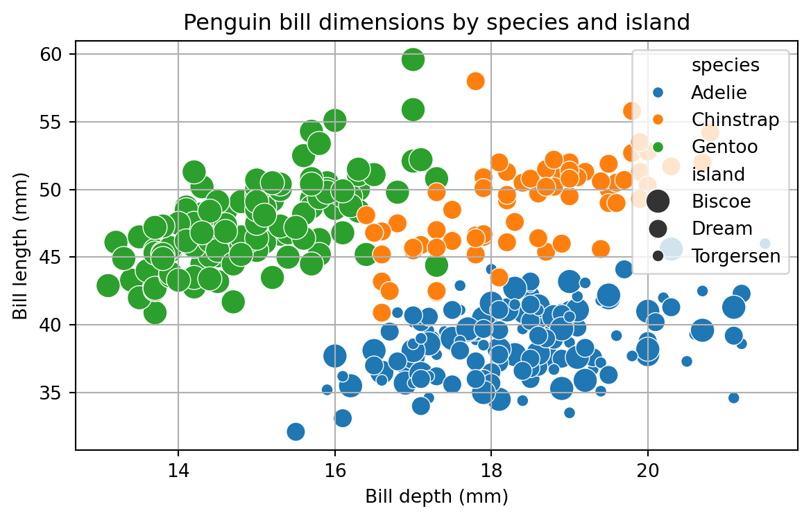
Using size for categories is possible, but the ordering can suggest a quantitative ranking. Consider faceting by island when a clearer categorical comparison is needed.
More Graphs
For additional seaborn visualizations, see the seaborn gallery.